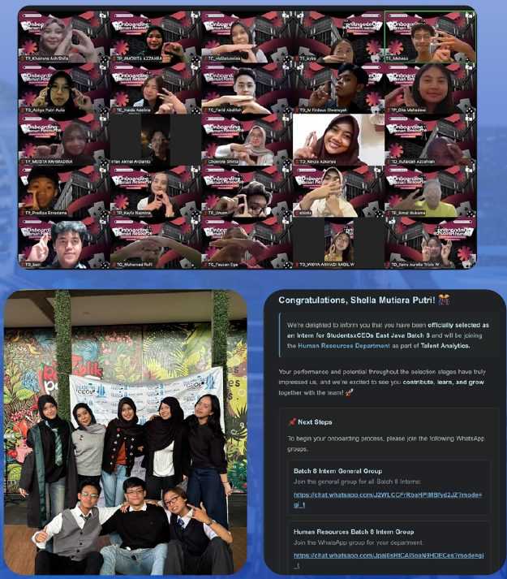

Oct 2026 – Present
Internship
StudentsxCEOs East Java
Intern of Talent Analytics (Human Resources)
- Organized historical member performance data from two previous quarters into a Google Sheets database.
- Analyzed member performance across 11 KPIs using charts and visualizations to identify trends and patterns.
- Translated findings into actionable recommendations on what to improve, maintain, or develop further.
